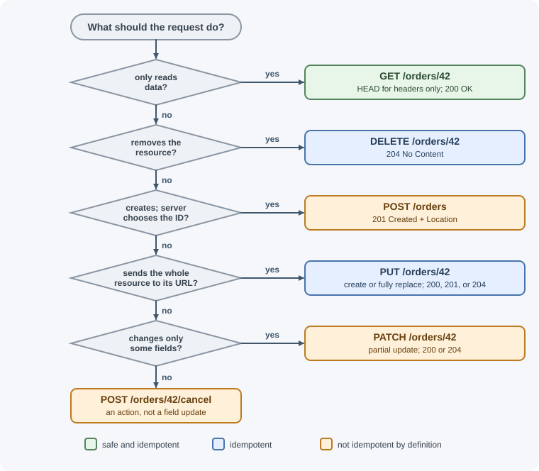
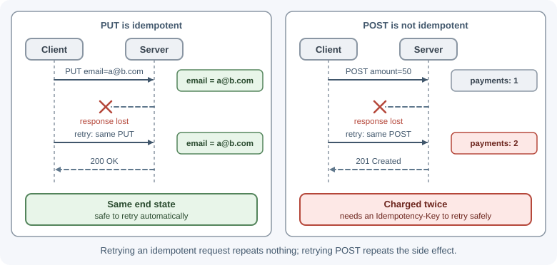

HTTP Methods¶
An HTTP method (sometimes called a verb) tells the server what the client wants to do with the target resource: read it, create something, replace it, change part of it, or delete it. Each method has defined properties, such as whether it is safe to repeat, that browsers, caches, proxies, and client libraries rely on.
Why it matters¶
Methods are a contract, not a naming convention. Infrastructure makes real decisions based on them:
- Caches routinely store
GETandHEADresponses. APOSTresponse is cacheable only with explicit freshness information and a matchingContent-Location, so in practice it is almost never cached. - Browsers and HTTP clients may automatically retry idempotent requests
after a dropped connection, but should not retry a
POST. - Crawlers and link prefetchers follow links with
GET. IfGETdeletes data, a crawler can wipe your database. - CORS sends a preflight for methods other than
GET,HEAD, andPOST(and for some headers and content types). See CORS.
Using the right method makes your API predictable and safe to use.
Real-world usage¶
- GitHub uses
PUTfor "make it so" operations andPATCHfor updates. Starring a repository isPUT /user/starred/{owner}/{repo}: the client names the exact resource, repeating it is harmless, and GitHub's docs note you must sendContent-Length: 0because there is no body. Changing a repository's settings isPATCH /repos/{owner}/{repo}, which returns422if validation fails. - Stripe uses
POSTfor both create and update. Updating a customer isPOST /v1/customers/:id, and "any parameters not provided are left unchanged", which is partial-update (PATCH-like) behavior onPOST. To make those non-idempotent requests safe to retry, Stripe accepts idempotency keys on allPOSTrequests and says not to send them withGETandDELETE, which are already idempotent. - Kubernetes supports several
PATCHformats.kubectl patchtakes a--typeofjson(JSON Patch, RFC 6902),merge(JSON Merge Patch), orstrategic(a Kubernetes-specific strategic merge patch), which is a real example of the patch-format choice described below.
How it works¶
Properties every method has¶
- Safe: the method is read-only in intent. The client does not request any change to server state. Logging or counting views is fine; changing data the client asked about is not.
- Idempotent: sending the same request once or ten times leaves the
server in the same intended state. The responses can differ (a second
DELETEmay return404), but the end state is the same. Every safe method is also idempotent. - Cacheable: a response to this method may be stored and reused for later requests.
| Method | Purpose | Safe | Idempotent | Cacheable | Request body | Response body |
|---|---|---|---|---|---|---|
GET |
Read a representation | Yes | Yes | Yes | No defined meaning; avoid | Yes |
HEAD |
Same as GET but headers only |
Yes | Yes | Yes | No defined meaning; avoid | No |
POST |
Process data / create a subordinate resource / trigger an action | No | No | Only with explicit freshness info; rare in practice | Yes | Yes |
PUT |
Create or fully replace the resource at this URL | No | Yes | No | Yes | Optional |
PATCH |
Partially modify a resource | No | Not by definition | No | Yes | Optional |
DELETE |
Remove the resource | No | Yes | No | No defined meaning; avoid | Optional |
OPTIONS |
Ask which methods/features the target supports; CORS preflight | Yes | Yes | No | Rare | Optional |
TRACE |
Echo the request back for debugging | Yes | Yes | No | No | Yes (the echoed request) |
CONNECT |
Open a tunnel through a proxy (e.g. for HTTPS) | No | No | No | No | n/a |
GET¶
Retrieves a representation of a resource. It must not change server state in a way the client is responsible for.
- Typical responses:
200 OKwith the resource,304 Not Modifiedfor a conditional request,404 Not Found. - Parameters go in the path (
/orders/42) and query string (/orders?status=paid&page=2), never in a body. - Responses can be cached by browsers, CDNs, and proxies.
GET /api/orders/42 HTTP/1.1
Host: api.shop.example
Accept: application/json
HEAD¶
Identical to GET, except the server returns only the status line and
headers, no body. Clients use it to check whether a resource exists, read its
size (Content-Length), or check ETag/Last-Modified without downloading
it. Express answers HEAD automatically for routes defined with app.get().
POST¶
Asks the server to process the enclosed data according to the resource's own rules. It is the most general method:
- Create a new resource in a collection:
POST /api/orders. - Trigger an action that does not map to a resource:
POST /api/orders/42/refund. - Submit a form, upload a file, run a search with a large query.
Typical responses: 201 Created with a Location header pointing to the new
resource, 200 OK with a result, 202 Accepted if processing continues in
the background, 400/422 for invalid input.
POST is not idempotent: sending it twice can create two orders or
charge a card twice. Protect important POST endpoints with idempotency
keys. See timeouts, retries, and idempotency.
PUT¶
Creates the resource at the given URL, or replaces it entirely with the request body. The body is the full new representation; any field you leave out is gone (or reset to its default).
- Typical responses:
201 Createdif it did not exist,200 OK(with body) or204 No Contentif it was replaced. - Idempotent: putting the same document ten times leaves the same result.
- The client chooses the URL, so
PUTsuits resources whose ID the client knows, such asPUT /api/users/42/avatarorPUT /api/settings/theme.
PATCH¶
Applies a partial modification. Defined in RFC 5789, not in the core
HTTP specification. The body is a set of changes, and its format is given by
the Content-Type.
- Typical responses:
200 OKwith the updated resource,204 No Content,409 Conflict,415 Unsupported Media Typefor an unknown patch format,422if the patch cannot be applied. - Not idempotent by definition, because some patch operations are not (for example "append to this array" or "increment by 1"). A patch that only sets fields to fixed values is idempotent in practice.
- Servers can advertise accepted patch formats with the
Accept-Patchresponse header.
DELETE¶
Removes the resource at the URL.
- Typical responses:
204 No Content(most common),200 OKwith a status body,202 Acceptedif deletion is queued,404 Not Found. - Idempotent: after the first successful delete the resource is gone; later
deletes leave it gone. Whether the second call returns
204or404is an API design choice; document it. - A request body has no defined meaning; some servers and proxies drop it. Put identifiers in the URL.
OPTIONS¶
Asks what communication options the target supports. The server can reply
with an Allow header listing the methods. Browsers send OPTIONS as a
CORS preflight before many cross-origin requests; see CORS.
Express answers OPTIONS automatically with an Allow header if you do not
define a handler.
TRACE¶
Asks the server to echo back the request it received, so a client can see what proxies changed. It can expose sensitive headers (the old cross-site tracing attack), so most servers disable it. You will rarely use it.
CONNECT¶
Asks a proxy to open a raw TCP tunnel to another host, which is how HTTPS
traffic passes through a forward proxy (CONNECT api.example.com:443).
Application APIs do not implement it.
PUT vs PATCH vs POST¶
Take a user resource:
{ "id": 42, "name": "Ana", "email": "ana@example.com", "role": "editor" }
| Request | Body | Result |
|---|---|---|
PUT /users/42 |
{"name": "Ana Li", "email": "ana@example.com", "role": "editor"} |
Whole resource replaced; any field not sent is removed or reset |
PUT /users/42 |
{"name": "Ana Li"} |
Email and role are now missing or defaulted (a common bug) |
PATCH /users/42 |
{"name": "Ana Li"} |
Only the name changes |
POST /users |
{"name": "Ben", "email": "ben@example.com"} |
New user created; server picks the ID |
POST /users/42/promote |
(empty) | An action; not a plain field update |
Rules of thumb:
- Use
POSTto create when the server assigns the ID, and for actions. - Use
PUTwhen the client sends the complete resource, or creates it at a URL it chooses. - Use
PATCHfor partial updates (the most common kind of update in real APIs).

JSON Merge Patch vs JSON Patch¶
Two standard formats describe the changes in a PATCH body.
JSON Merge Patch (RFC 7396, Content-Type: application/merge-patch+json)
sends an object that looks like the resource. Present fields are set, fields
set to null are removed, and missing fields are untouched.
{ "name": "Ana Li", "nickname": null }
It is simple and readable, but it cannot set a field to null (null means
"remove"), and arrays are replaced wholesale, not edited.
JSON Patch (RFC 6902, Content-Type: application/json-patch+json) sends
an ordered list of operations: add, remove, replace, move, copy,
and test.
[
{ "op": "test", "path": "/version", "value": 7 },
{ "op": "replace", "path": "/name", "value": "Ana Li" },
{ "op": "add", "path": "/tags/-", "value": "vip" },
{ "op": "remove", "path": "/nickname" }
]
It can edit arrays precisely and test makes the patch fail if the document
changed, but it is more verbose and harder to validate. The patch is applied
atomically: if one operation fails, none apply.
Many APIs simply accept application/json with merge-style semantics. That
is fine as long as the behavior for null and arrays is documented.
Why GET must never change state¶
GET requests are made by things you do not control: browser prefetching,
link previews in chat apps, search crawlers, antivirus link scanners, and
caches replaying responses. If GET /api/emails/9/delete deletes an email, a
link preview can delete it. Change state only with POST, PUT, PATCH, or
DELETE.
GET with a body: don't¶
RFC 9110 says content in a GET request has no generally defined meaning.
Many proxies, CDNs, and client libraries (including browser fetch()) drop
the body or reject the request. If a search query is too large for a URL,
use POST /search (an action) instead.
Mapping CRUD to methods¶
| Operation | Method and path | Success status |
|---|---|---|
| List | GET /api/articles |
200 |
| Read one | GET /api/articles/:id |
200 |
| Create | POST /api/articles |
201 + Location |
| Replace | PUT /api/articles/:id |
200 or 204 (or 201 if created) |
| Update part | PATCH /api/articles/:id |
200 or 204 |
| Delete | DELETE /api/articles/:id |
204 |
Idempotency in practice¶
| Request | Repeat 3 times | Idempotent? |
|---|---|---|
GET /accounts/7 |
Same read three times | Yes |
PUT /accounts/7/email with {"email":"a@b.com"} |
Email is a@b.com |
Yes |
DELETE /carts/7/items/3 |
Item 3 is gone | Yes |
PATCH /accounts/7 with {"email":"a@b.com"} |
Same state | Yes, in practice |
PATCH /accounts/7 with {"op":"increment","field":"credits"} |
Credits +3 | No |
POST /payments with {"amount":50} |
Three payments | No (use an idempotency key) |
Idempotency matters because networks fail mid-request. If a client does not know whether a request arrived, it can safely retry an idempotent one.

405 Method Not Allowed and the Allow header¶
If the resource exists but does not support the method, return
405 Method Not Allowed. RFC 9110 requires the response to include an
Allow header listing the supported methods.
HTTP/1.1 405 Method Not Allowed
Allow: GET, HEAD, PATCH
Content-Type: application/problem+json
Compare with 501 Not Implemented, which means the server does not recognize
or support the method for any resource.
Method override, and why to avoid it¶
Old HTML forms can only send GET and POST, and some old proxies blocked
other methods. The workaround was to send POST with a hidden field or a
header such as X-HTTP-Method-Override: DELETE. Avoid it in new APIs:
- It hides the real operation from caches, logs, and security tools.
- It can let an attacker turn a
POSTinto aDELETEpast a filter that checks only the method. fetch()and every modern client support all methods directly.
When to use and when not to use¶
GET: use for every read, including searches that fit in a URL. Do not use it for anything that changes state, or for data that must not end up in logs and browser history (passwords, tokens).POST: use to create when the server picks the ID, for actions that are not plain field updates, and for searches too large for a URL. Avoid it for plain reads (you lose caching) and protect it with idempotency keys when duplicates would hurt.PUT: use when the client sends the complete resource or creates it at a URL it chooses, and when you want retries to be safe. Avoid it for partial updates; missing fields get wiped.PATCH: use for partial updates, which most edit forms are. Avoid it when clients cannot agree on a documented patch format, and remember it is not idempotent by definition.DELETE: use to remove the resource at the URL. Avoid request bodies; put identifiers in the path.
| You need to... | Use | Instead of | Why |
|---|---|---|---|
| Read data | GET |
POST /getX |
Cacheable, safe to retry, bookmarkable |
| Create with a server-generated ID | POST /items |
PUT /items |
The client does not know the new URL |
| Create or replace at a known URL | PUT /items/42 |
POST |
Idempotent; retries are harmless |
| Change a few fields | PATCH /items/42 |
PUT with a partial body |
PUT replaces the whole resource |
| Trigger an action (refund, publish) | POST /items/42/refund |
PATCH with an action field |
Actions have side effects beyond the fields |
| Remove | DELETE /items/42 |
POST /items/42/delete or GET .../delete |
Idempotent, and GET can be triggered by crawlers |
Practical examples¶
A full set of routes in Express¶
import express from "express";
const app = express();
app.use(express.json());
const articles = new Map(); // stand-in for a database
let nextId = 1;
app.get("/api/articles", (req, res) => {
res.json([...articles.values()]);
});
app.get("/api/articles/:id", (req, res) => {
const article = articles.get(req.params.id);
if (!article) return res.sendStatus(404);
res.json(article);
});
app.post("/api/articles", (req, res) => {
const id = String(nextId++);
const article = { id, title: req.body.title, body: req.body.body ?? "" };
articles.set(id, article);
res.status(201).location(`/api/articles/${id}`).json(article);
});
// PUT: full replacement; fields not sent are reset
app.put("/api/articles/:id", (req, res) => {
const existed = articles.has(req.params.id);
const article = { id: req.params.id, title: req.body.title, body: req.body.body ?? "" };
articles.set(req.params.id, article);
res.status(existed ? 200 : 201).json(article);
});
// PATCH: only the fields sent change
app.patch("/api/articles/:id", (req, res) => {
const article = articles.get(req.params.id);
if (!article) return res.sendStatus(404);
const { title, body } = req.body;
if (title !== undefined) article.title = title;
if (body !== undefined) article.body = body;
res.json(article);
});
app.delete("/api/articles/:id", (req, res) => {
articles.delete(req.params.id); // deleting twice is harmless
res.sendStatus(204);
});
// Registered after the real routes, so it only sees other methods.
// HEAD is already answered by the GET route above.
app.all("/api/articles", (req, res) => {
res.set("Allow", "GET, HEAD, POST, OPTIONS");
if (req.method === "OPTIONS") return res.sendStatus(204);
res.sendStatus(405); // PUT, PATCH, DELETE on the collection
});
app.listen(3000);
Validation is left out to keep the method behavior visible. See request validation.
Try them with curl¶
curl -i -X POST http://localhost:3000/api/articles \
-H "Content-Type: application/json" -d '{"title":"Hello"}'
curl -i -X PATCH http://localhost:3000/api/articles/1 \
-H "Content-Type: application/json" -d '{"body":"First post"}'
curl -I http://localhost:3000/api/articles/1 # HEAD: headers only
curl -i -X DELETE http://localhost:3000/api/articles/1
curl -i -X PUT http://localhost:3000/api/articles # 405 with Allow
Best practices¶
- Choose methods by their semantics, not by convenience.
- Keep
GET,HEAD, andOPTIONSfree of side effects. - Return
201 Createdwith aLocationheader whenPOSTcreates something. - Prefer
PATCHfor partial updates; document hownulland arrays behave. - Protect non-idempotent operations (payments, orders) with idempotency keys.
- Return
405with anAllowheader for unsupported methods on a known resource. - Put identifiers in the path, filters in the query string, and data in the body.
In production¶
- Data disappears with nobody clicking "delete".
Detect: access logs show
GETrequests to an action URL (such as/unsubscribe/...or/items/9/delete) from crawler or link-preview user agents just before the change. Cause: a state-changingGET. Fix: make the action aPOST(a confirmation page can link to a form that posts). - Duplicate orders or charges after network blips.
Detect: pairs of identical
POSTs seconds apart from the same client, often after a timeout in the client logs. Cause: the client or a library retried a non-idempotentPOST. Fix: require anIdempotency-Keyand return the stored result for repeats, as Stripe does. - Fields wiped by an "update".
Detect: audit logs show fields set to
nullor defaults right after aPUTfrom a client that only edits some fields. Cause: partial bodies sent withPUT. Fix: switch the client toPATCH, or rejectPUTbodies that are missing required fields with400/422. - A
DELETEorGETbody arrives empty in production only. Detect: the same request works locally but fails behind the CDN or proxy. Cause: some intermediaries drop bodies on methods where the body has no defined meaning. Fix: move the data into the path or query string, or usePOSTfor a bulk action. - Clients get
404and give up on a URL that exists. Detect:404s for known paths with an unusual method in access logs. Cause: unsupported methods fall through to the "not found" handler. Fix: return405with anAllowheader so clients see what is supported.
Important terminology¶
- Method (verb): the action requested on a resource.
- Safe method: a method that does not request a change to server state.
- Idempotent method: repeating the request has the same intended effect as sending it once.
- Cacheable: responses may be stored and reused.
- Representation: the data sent for a resource, such as a JSON document.
- Preflight: a browser's
OPTIONSrequest that checks CORS permission before the real request. - JSON Merge Patch: a patch format that looks like a partial resource.
- JSON Patch: a patch format made of ordered operations.
Common mistakes and misconceptions¶
- Using
GETfor actions such as/logoutor/delete, which crawlers and prefetchers can trigger. - Treating
PUTas a partial update and accidentally wiping fields the client did not send. - "Idempotent means the same response every time." It means the same server state; the status code can differ.
- Using
POSTfor everything and losing caching, safe retries, and clarity. - Sending a body with
GETorDELETEand having proxies silently drop it. - Returning
404for a wrong method instead of405withAllow.
Revision questions¶
- Define safe, idempotent, and cacheable, and give one method that is each.
- Why is
DELETEidempotent even though the second call may return404? - A client sends
PUT /users/42with only{"name": "Ana"}. What should happen to the other fields, and why is that a common bug? - When would you choose JSON Patch over JSON Merge Patch?
- Why is it dangerous for a
GETendpoint to delete data? - What must a
405response include?
Further learning¶
- MDN: HTTP request methods documents every method with examples.
- RFC 9110: Section 9, Methods defines method semantics, safety, and idempotency.
- RFC 5789: PATCH Method for HTTP.
- RFC 7396: JSON Merge Patch.
- RFC 6902: JSON Patch.